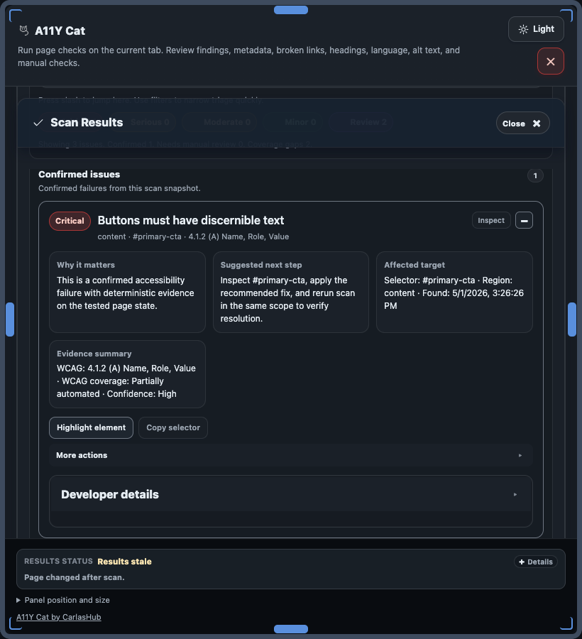

The public extension processes page content locally in the browser. It stores local workflow data on the current machine and creates exports only when the user asks for them.
Public package boundary: no developer database is used by the public release package, no developer-operated scan server is required, and no analytics or telemetry endpoint is included. Optional assistant actions can call a user-configured local endpoint.

The extension exposes local storage and data-clearing behaviour directly in the panel.
Local Processing
Scans run in the local browser runtime and results are processed in the extension context on-device.
Local-first definition: Local-first means A11Y Cat processes scan results in the browser and does not send scan results, page content, reports, or browsing activity to a developer-operated server in the public beta package.
Export caveat: Exports are files created locally. Once shared by the user, they are outside the extension's control.
Assistant caveat: Optional assistant actions, when enabled and configured by the user, can send selected issue context to a user-provided local assistant endpoint.
Storage Keys
These are the local keys used by the extension for settings, history, workflow state, and diagnostics support.
History and comparison
Saved scan snapshots used for local history and previous-scan comparison.
Workflow state
Issue annotations, workflow status, local notes, and virtual Screen Reader Review state.
Settings and support data
Saved settings, panel geometry, performance benchmarks, and spelling allowlist entries.
Current local storage keys
a11yCatExtSettingsV1
a11yCatScanHistoryV1
a11yCatScanHistoryArchiveV1
a11yCatWorkflowStateV1
a11yCatVirtualSrReviewStateV1
a11yCatPerfBenchmarksV1
a11yCatSpellingAllowlistV1
Storage and privacy flow diagram
This diagram shows where data is processed, stored, and exported in the public extension package.
Data path summary: processing and storage are local; sharing occurs when a user exports/copies evidence or explicitly uses optional assistant actions.
Text equivalent: public docs and package state do not include automatic upload to a developer server.
Text equivalent: optional assistant actions can use a user-configured local endpoint and are not part of deterministic scan processing.
Export files can still contain sensitive page-derived details and should be reviewed before sharing.
Export flow diagram
This diagram isolates the export path from current scan output to local user-controlled files.
Exports are generated locally and only leave the device when a user chooses to share them.
Text equivalent: the extension does not auto-upload export files to developer infrastructure.
Text equivalent: export consumers must review sensitive fields before external sharing.
Exports and Sensitive Data
page URL and, where available, page title
selectors and evidence snippets
rule ids, WCAG references, source-engine fields, and classifications
local notes and workflow state
diagnostics and limitation records
virtual Screen Reader Review logs and QA notes where those exports are used
Data protection and regulatory considerations
A11Y Cat processes page content locally. No personal data is transmitted to developer infrastructure by the public release build. Enterprise users operating in regulated environments (GDPR, UK GDPR, CCPA, HIPAA) should review storage keys and assess whether scan output, export files, or local history entries may contain personal data from tested pages. Export files may include page URLs, selectors, and text snippets.
The Broken Links review sends same-origin HEAD or GET requests to verify link destinations.
These requests originate from the page context, not from A11Y Cat infrastructure.
Cross-origin links are not fetched automatically and remain unverified.
No request data is sent to developer-controlled servers by the public package.
Optional assistant actions can call a user-configured local assistant endpoint when users enable and run those actions.
Local processing does not mean every restricted or protected page context is fully inspectable.
Clearing Data
Scan Results → Privacy and data use → Clear all local extension data
Removing the extension clears extension-managed storage.
Export caution: exports stay local until the user copies or shares them, but they can contain sensitive snippets, selectors, URLs, titles, notes, and diagnostics.